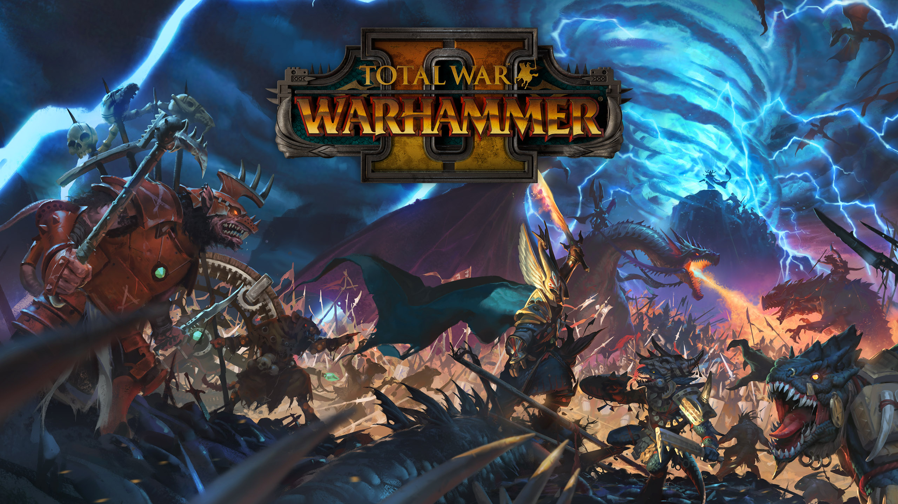

ТОП 20
СОВРЕМЕННЫХ ИГР
Современные видеоигры — это
отдельные миры, способные
развлекать и рассказывать
истории.
Жанры
1. ОНЛАЙН-ШУТЕРЫ
Шутеры — это жанр, в котором игроки активно используют огнестрельное оружие или другие виды вооружения для
сражений с врагами. Основной акцент делается на быстрых действиях, точности и реакции. Игры могут быть
одиночными или многопользовательскими, включая командные бои или режимы "королевской битвы".
-
Counter-Strike 2
Легендарный тактический шутер, который остаётся лидером в киберспорте. Игроки делятся на команды террористов и контр-террористов, сражаясь в режимах вроде разминирования бомбы или спасения заложников. CS:GO славится своей точной механикой стрельбы и высоким уровнем мастерства.
-

VALORANT
Тактический шутер от Riot Games, сочетающий элементы CS:GO и геройских игр. Игроки выбирают агентов с уникальными способностями и сражаются 5 на 5, устанавливая или обезвреживая бомбу. Игра выделяется стратегической глубиной и командным взаимодействием. -
Apex Legends
Battle royale от Respawn Entertainment с командами по три человека. Каждый герой обладает уникальными способностями, а система пингов упрощает общение. Игра известна своим быстрым темпом и постоянным развитием. -

FragPunk
Динамичный 5v5 геройский шутер от Bad Guitar Studio, выпущенный в марте 2025 года. FragPunk выделяется уникальной системой Shard Cards, которые меняют правила боя каждую игру: от усиления прыжков до превращения пуль в молнии. Игроки выбирают из 13 героев (лансеров) с особыми способностями и сражаются в режимах вроде Shard Clash, где атакующие устанавливают конвертер, а защитники его обезвреживают. Быстрые раунды и яркий стиль делают игру свежей и непредсказуемой.
2. ХОРРОРЫ
Хорроры — это жанр, цель которого — вызвать у игроков чувство страха, тревоги и напряжения. Такие игры
часто имеют мрачные сюжеты, пугающую атмосферу, неожиданные моменты и элементы выживания. Могут быть
психологическими или с активными столкновениями с монстрами.
-
VISAGE
Психологический хоррор, который затягивает игрока в мрачный дом, полный тайн и сверхъестественных явлений. Основной акцент сделан на атмосфере страха, исследовании и решении головоломок. Постоянное ощущение угрозы держит в напряжении до самого конца.
-

Dead Space
Научно-фантастический хоррор, где игроку предстоит сражаться с жуткими инопланетными монстрами на заброшенном космическом корабле. Игра выделяется своей напряженной атмосферой, уникальной механикой расчленения врагов и звуковым дизайном, который усиливает ужас. -
Outlast 2
Продолжение культовой серии Outlast, переносящее игрока в мрачную деревню, населенную религиозными фанатиками. Здесь нет оружия — только скрытность и бегство. Каждая встреча с врагом превращается в настоящий кошмар, полный адреналина. -

R.E.P.O
Инди-хоррор с уникальной механикой и атмосферой. Игрок исследует заброшенные локации, решает головоломки и избегает опасностей. Постоянное чувство неопределенности и угрозы делает игру особенно запоминающейся.
3. СТРАТЕГИИ
Стратегии — это жанр, где игроки планируют, управляют ресурсами и принимают тактические решения для
достижения целей. Это может быть строительство баз, управление армиями или развитие цивилизаций. Игры
бывают пошаговыми или в реальном времени и требуют стратегического мышления.
-
StarCraft II
Легендарная RTS (стратегия в реальном времени), известная своим высоким уровнем соревновательности и балансом между тремя уникальными расами.
-

Civilization VI
Глубокая пошаговая стратегия, в которой игрок строит и развивает цивилизацию на протяжении тысячелетий, балансируя между войной, дипломатией и культурой. -
Total War: Warhammer II
Комбинирует фэнтезийную тематику с тактическими боями и управлением империей. Игра предлагает эпические сражения и разнообразные фракции. -

XCOM 2
Тактическая игра с управлением отрядом и стратегическими решениями. Игрок сражается с инопланетянами, развивая базу и принимая сложные решения на поле боя и угрозы делает игру особенно запоминающейся.
4. RPG
RPG (Role-Playing Games) — это жанр, в котором игроки берут на себя роли персонажей и развивают их через
задания, сражения и выборы. Такие игры предлагают глубокие сюжеты, системы прокачки и возможность влиять
на развитие истории.
-
The Witcher 3: Wild Hunt
Огромный открытый мир, захватывающий сюжет и моральные дилеммы. Игрок управляет Геральтом, охотником на монстров, в эпическом приключении.
-

Dark Souls III
Известна своей высокой сложностью, уникальным дизайном мира и глубоким лором. Игра требует мастерства и терпения, предлагая незабываемый опыт. -
Persona 5 Royal
Стильная RPG с акцентом на социальных взаимодействиях и управлении временем. Игрок управляет школьником, который ведет двойную жизнь супергероя.
-

Baldur's Gate 3
Эпическая ролевая игра (RPG), разработанная студией Larian Studios и основанная на культовой вселенной Dungeons and Dragons. Она сочетает в себе глубокую проработку мира, нелинейный сюжет и тактические бои, которые заставляют игрока продумывать каждый шаг. Если вы ищете игру, где ваши решения имеют значение, а приключения затягивают на десятки часов, то Baldur's Gate 3 — это именно то, что вам нужно.
5. РОГАЛИКИ
Рогалики — это поджанр RPG с процедурно генерируемыми уровнями, высокой сложностью и механикой постоянной
смерти, где после гибели персонажа игра начинается заново. Игроки исследуют подземелья, сражаются с
монстрами и собирают предметы.
-
Hades
Комбинирует рогалик-механики с сильным повествованием. Игрок пытается сбежать из подземного мира, сражаясь с богами и монстрами, при этом каждое прохождение уникально.
-

Dead Cells
Динамичный геймплей с элементами метроидвании. Игра предлагает разнообразное оружие и способности, а также высокую реиграбельность. -
Spelunky 2
Сложная игра с процедурно генерируемыми уровнями, где каждое прохождение полно опасностей и случайных событий. Игра требует мастерства и быстрой реакции.
-

The Binding of Isaac: Rebirth
Известна своим разнообразием предметов и высокой реиграбельностью. Игрок сражается с монстрами в подземельях, открывая новые комбинации и секреты.